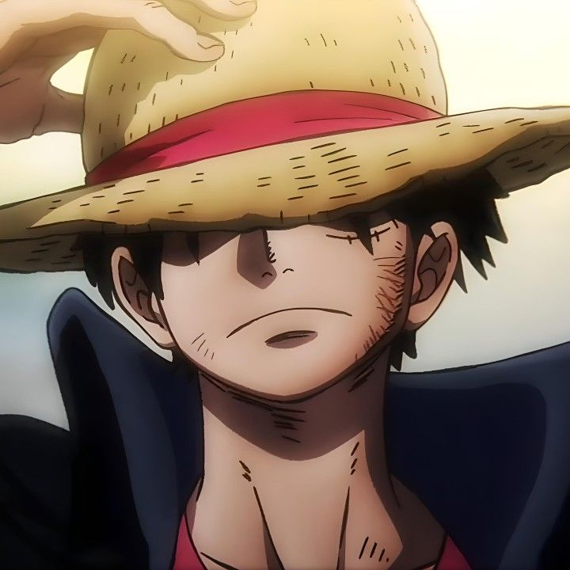

One Piece (ワンピース Wan Pīsu?) (estilizado en mayúsculas) es un manga escrito e ilustrado por el mangaka japonés Eiichirō Oda. Comenzó a publicarse en la revista Japonesa Weekly Shōnen Jump el 22 de julio de 1997 y a la fecha se han publicado 109 volúmenes. La obra narra las aventuras de Monkey D. Luffy y su tripulación, los Piratas de Sombrero de Paja, recorriendo el mar para encontrar el legendario tesoro "One Piece" y así convertirse en el Rey de los Piratas.
One Piece es el manga más vendido de la revista Weekly Shōnen Jump (la más importante, reconocida y vendida del medio), de la Editorial Shueisha, y de toda la historia de Japón, con más de 516 millones de copias vendidas a nivel mundial (416 millones en Japón, y 100 millones en 60 países juntos), y en Japón fue el manga más vendido de manera consecutiva desde el año 2007 hasta 2018 logrando un récord histórico. Es el manga que más ganancias ha reportado a su autor, ostentando el Récord Guinness como el manga con mayor cantidad de copias publicadas de la misma obra de cómic realizado por un único autor en todo el mundo. En la encuesta realizada por la cadena de televisión japonesa TV Asahi para elegir los 100 Mejores mangas de la historia, One Piece alcanzó el puesto número 1.
Luffy
